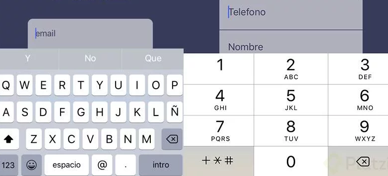
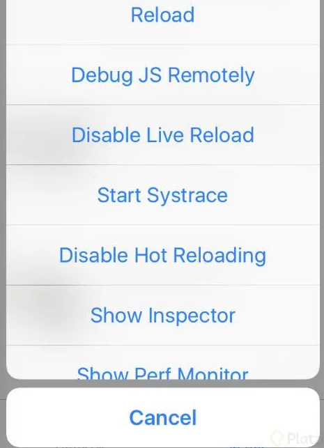
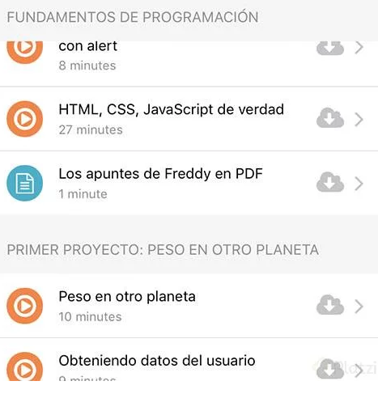

How to start with React Native if you already know React.js
I would have liked to know this before creating my first mobile apps. I chose React Native because knowing React had a lot of the way ready to feel prepared and have an application with millions of downloads in record time. This is a list of features that perhaps an application will use and tell you about my experience changing the responsive web world chip to the "native" application mode.
We do not need media queries
Only a screen that although can have different sizes always respects the same experience, although since you write at the same time apps for iOS and Android, the closest thing to a Media Query is to do an if between platforms.
We don not have forms
There is no component that regularizes the data and has a standard format for sending it as FormData, while there is a TextInput that has a variety of properties, such as a field that is autofocus or that is exclusive to a password or email. take to the next point.
It's easy to customize the keyboard
Especialmente para iOS hay muchos tipos de teclado que podemos asignar al Componente TextInput que mejoran muchísimo la experiencia como twitter, url o web-search y claro están los clásicos numéricos o de email.
The top where you see the battery is called the status bar
It sounds obvious but even though it took me a couple of minutes to find out that it existed is very powerful in the experience of your application and even more if your app has a dark header and if or if you wonder how to make it go from black to white or more show that a request is being made to the API and show a load icon, this is the component you need StatusBar.
Developer Experience
Accounts with tools such as: debug the js code with access to a console in the browser where you can see all your logs. For example, if you are not sure if you linked an event well. But the best thing is to have Hot and Live Reload which is the feature to redraw the app automatically when you make any changes.
This worked great for me in the emulator. If you are going to debug on the phone, use this tutorial on how to activate it that resolved my life. It was to change a bit the reference to my IP within the configuration of the app. I would have wanted to know it from the beginning.
Lists
For my grand finale I have the React Native feature where I honestly felt a little silly at the beginning, ListView.
Sticky headers
React Native already did the work for you to create a list component that receives "fixed headers" You do not have to hate to redo it, this fixed header is something that you see a lot in the applications to save space and give context of where to be located, you just have to use the stickySectionHeadersEnabled property.
Separators
When you make a list you usually put an edge on the bottom of them to separate them visually, this in CSS solved it using pseudo elements and pseudo-classes like: after or: last-child but guess: There is no such thing in React Native, this it hurt a lot. but the ListView component thought of everything and it brings you renderSeparator that does the magic for you without having to think about not doing the render of the last separator since this does it automatically.
Bonus Tracks
Expo is included in create-react-native-app is an easy way to start with an application and make debug without the phone is connected to the computer and you can share with a QR the application in which you are working or upload it to your store where anyone can search for it by the name you choose, Without a doubt a great option but eventually you will have to do eject of the app to publish it or if you have to use a dependency that requires native code in your application. So my advice here is to use this option if you are going to make a demo or want to try something fast. If you do an app seriously, go the traditional way from the beginning.
Final Tips
If you come from the world of the web as I most important when creating a mobile application is to think first: "how is this solved in the world of apps?" This will help you to make better searches on the Internet, find the keywords correct, learn new things and of course go the right way.
If you come from the world of the web as I most important when creating a mobile application is to think first: "how is this solved in the world of apps?" This will help you to make better searches on the Internet, find the keywords correct, learn new things and of course go the right way.